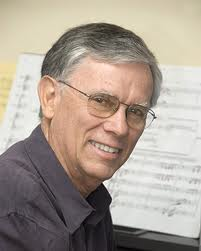
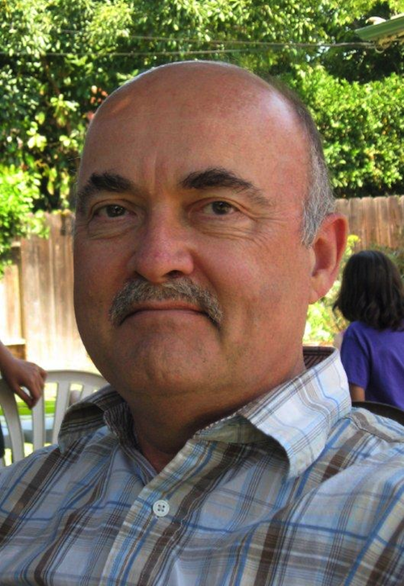

Barbara Day Turner
Barbara Day Turner: Music Director
Conductor Barbara Day Turner is music director of the San José Chamber Orchestra, which she founded 20 years ago. She is an ardent advocate for new music and has commissioned and premiered more than 110 new works which have been performed by the San José Chamber Orchestra. Maestra Day Turner is also the music administrator and conductor of the Utah Festival Opera and Musical Theater where she has been resident conductor for the past 10 seasons. Most recently, she led an all Gershwin concert, as well as productions of Don Giovanni and South Pacific. BDTís resumé includes most of the standard opera repertoire, ranging from the early works of the baroque to several world premieres, as well as dozens of musical theater pieces. Abroad, Maestra Day Turner has conducted at the Rheinsberg Festival in Berlin, the Thuringian Symphony Orchestra in Germany, as well as the Orquesta Sinfónica de Aguascalientes, Mexico. Elsewhere, in the recent past, she has conducted La Bohéme for Rimrock Opera in Montana and the Symphony Silicon Valley’s setting of The Music Man. In her many years with Opera San José, she premiered Henry Mollicone’s Hotel Eden, Alva Henderson’s West of Washington Square, Craig Bohmler and Daniel Helfgot’s The Tale of the Nutcracker and George Roumanis’ Phaedra, besides conducting a vast repertoire of works by Handel, Cavalli, Mozart, Rossini, Puccini, Bizet, Verdi, Britten, Stravinsky, Barber and many others. Other opera venues include Portland Opera (Nixon In China) and El Paso Opera (Elixir of Love). Her orchestral performances include concerts with the Redwood, South Valley and Billings symphonies; and the North Fayetteville orchestra. Recent appearances as guest conductor include the San José State University’s double bill of the operas The Clever Mistress by Sirota and Suor, and Isabella by Xavier Rodriguez; the musical leadership of Long Live Life, music from Theresienstadt; along with the release of Choose Life, with music by Mona Lyn Reese, the fifth CD released with the participation of the San José Chamber Orchestra. The Maestra’s upcoming projects include productions of Robert Ward’s The Crucible with Rimrock Opera and Gounod’s Faust, Kiss me Kate, and Girl Crazy with the Utah Festival Opera; plus numerous appearances as harpsichordist.
Anthony Quartuccio
Anthony Quartuccio: Associate Director
Associate conductor Anthony Quartuccio is also music director of the Nova Vista Symphony, the South Valley Symphony, and the San Jose Senior Youth Chamber Orchestra. He continues to appear regularly at Opera San Jose where he has conducted for nearly ten years. From 1996 to 2002 he served as founding music director of the Bay Shore Lyric Opera in Capitola, California.
Quartuccio’s appearances in recent seasons include the opening night concert of the Philippine Philharmonic Orchestra in Manila in celebration of the 40th anniversary of the nation’s cultural center. In 2009 he conducted a highly successful tour with the San Jose Youth Chamber Orchestra in New York with performances at Ellis Island and the United Nations world headquarters. Also in that year he and the San Jose Youth Chamber Orchestra performed for the mayor of San Jose and a private concert for His Holiness the Dalai Lama of Tibet in San Francisco. In the six years of his work with the San Jose Chamber Orchestra, he has conducted several subscription concerts, many of which included world premieres.
Quartuccio’s appearances in recent seasons include the opening night concert of the Philippine Philharmonic Orchestra in Manila in celebration of the 40th anniversary of the nation’s cultural center. In 2009 he conducted a highly successful tour with the San Jose Youth Chamber Orchestra in New York with performances at Ellis Island and the United Nations world headquarters. Also in that year he and the San Jose Youth Chamber Orchestra performed for the mayor of San Jose and a private concert for His Holiness the Dalai Lama of Tibet in San Francisco. In the six years of his work with the San Jose Chamber Orchestra, he has conducted several subscription concerts, many of which included world premieres.
Susan Stein
Susan Stein: San José Youth Chamber Orchestra Music Director
Susan Stein leads the San José Youth Chamber Orchestra as its music director and co-conductor. Under her guidance the Senior Youth Orchestra received a commendation this season from Mayor Chuck Reed for their performance at The Mayor’s Breakfast and were honored to perform for the Dalai Lama in San Francisco with San José vocalist Brett Hammon.
Guest Composers
2012-2013
Clarice Assad
Craig Bohmler
Vivian Fung
SJCO Works: Pizzicato, Concertino Notturno, Sinfonietta for Strings
SJYCO Works: Butterfly Variations
website
SJYCO Works: Butterfly Variations
website
Anica Galindo
(photo by Patrick Jensen)
SJCO Works: A Wintry Vale, Lambent Isles,
Trinitas I, II and III,
These Feathered Walls
website
SJCO Works: A Wintry Vale, Lambent Isles,
Trinitas I, II and III,
These Feathered Walls
website
2011-2012
Brent Heisinger

SJCO Works: EKTA I, EKTA II
website
website
Kerry Lewis

SJCO Works: Elegy for Lou Harrison
SJYCO Works: Cruise Control, Fantasia for Violin and Cello
SJYCO Works: Cruise Control, Fantasia for Violin and Cello
Jason McChristian
SJCO Works: Zephyr Approaches –
Concertino for Oboe and Strings
SJYCO Works: Prelude-for a young string orchestra
website
Concertino for Oboe and Strings
SJYCO Works: Prelude-for a young string orchestra
website
Previous
Michael Touchi
SJCO Works: Tango Barocco, Tiento, Kahea, Nocturn,
Concerto for Harpsichord and Strings, Symphony Dramaticus,
Toccata on a theme by Chopin,
SJYCO Works: Reconstructed Dances
Concerto for Harpsichord and Strings, Symphony Dramaticus,
Toccata on a theme by Chopin,
SJYCO Works: Reconstructed Dances
Phil Young
SJCO Works: Dragon Year Fanfare
From The East
Autumn Reminiscence
SJYCO Works: Summer Memories
website
From The East
Autumn Reminiscence
SJYCO Works: Summer Memories
website